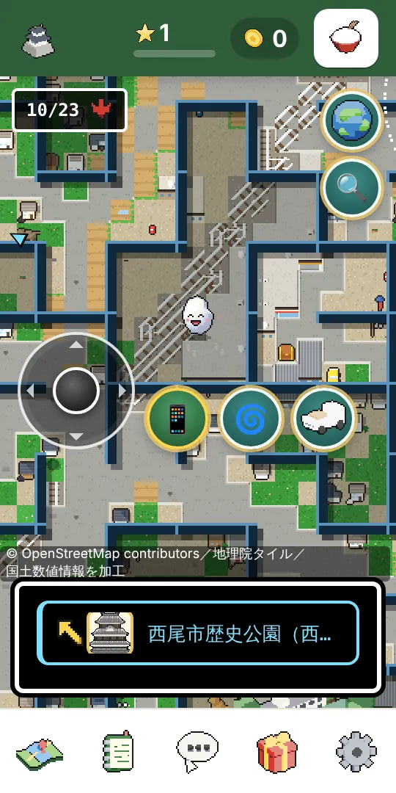
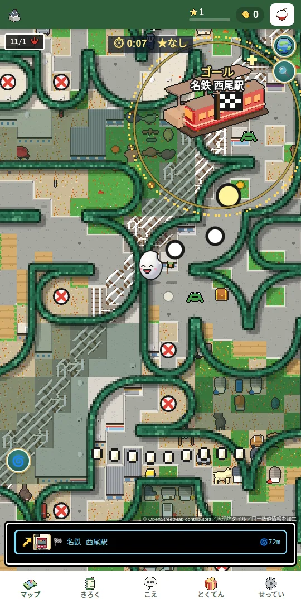
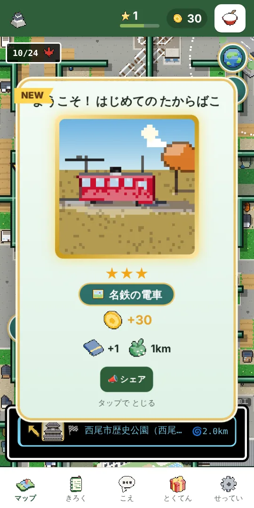
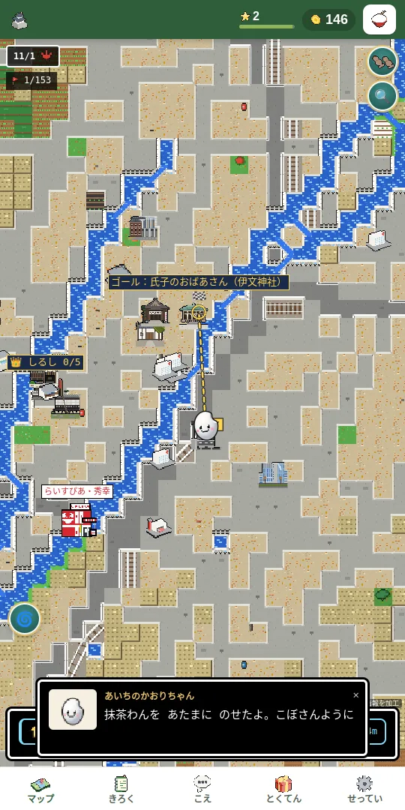
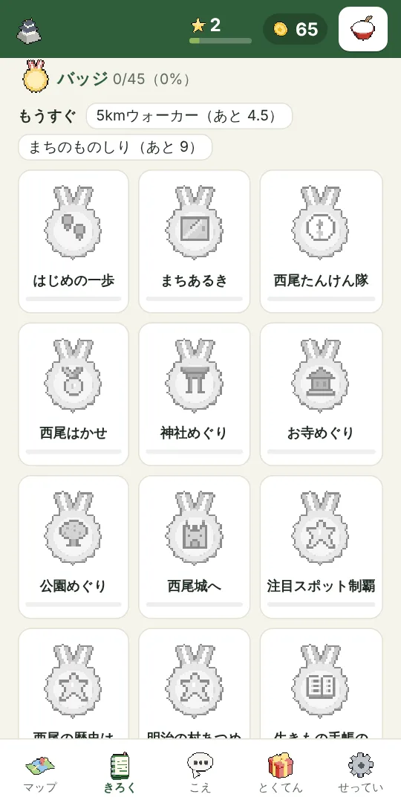

ミニゲーム「にしおジャンプ」名所（注目スポット）でチェックインすると、その日あそべます
🌀 西尾めいろ西尾の地図が 迷路に。傾けて お米を 名所まで
出典：西尾観光（西尾市観光協会）・西尾市公式ウェブサイト。日にちは変わることがあるので、お出かけ前に確かめてください。
西尾市の中で、たからばこを開けたり、スポットにチェックインしたりすると、西尾ならではのドット絵が1枚もらえます。絵は全部で74000枚。どの絵になるかは、その場所の地区（西尾・一色・吉良・幡豆・佐久島）と、田んぼ・畑・まちなか・海辺などの場所、季節と時間帯、その日の天気（晴れ・くもり・雨・霧・雪や虹）で変わります。雨の日に歩くと、雨の絵が集まります。目標は、37の題材と、それぞれの天気5つ（☀️☁️☔🌫️と、🌈＝冬は雪・夜は満月・ほかは虹）をそろえることです。
このゲームは、あそぶ人の声でそだちます。「こんな名所があるよ」「こうしたらもっと面白い」「ここがちがう」を送ってください。たしかめて、ゲームに反映します。反映されたら、ここでお知らせします。
🗓 今週のお題答えた！
名前・電話番号・住所など、あなたの個人情報は書かないでください。おたよりごとに、この端末で作った でたらめな「受付番号」をつけて送ります（だれが送ったかは分かりません）。たしかめた結果は、この番号で「あなたのおたより」にお知らせします。
まだありません。あなたの声が、さいしょの1つになるかもしれません。
🖼 公開ページ「西尾の四季ドット絵」（西尾の名所を、春夏秋冬・朝昼夕夜・4つの向きで描いた特大ドット絵。保存して西尾の紹介に使えます）
🌏 公開ページ「みんなで見つけた西尾」（ゲームを遊んでいない人にも、みんなの声でふえた西尾の名所を見てもらえます）
🔑 ひきつぎの あいことば機種を変えるときや、別の端末で続きを遊ぶときに使います。「あいことばを出す」でコピーして、新しい端末の ここに はりつけると、ポイント・めぐった所・ドット絵などが そのまま移ります（あるいて移動・操作して移動 は別の記録です）。
西尾市が、歩いてまちを知ってもらうためにつくったゲーム、と仮定した版です。西尾市に見てもらうための試作で、西尾市の公式のものではありません。お店の要素（当店・特典・キャンペーン）を外し、市役所に観光担当の職員さんがいます。
📄 西尾市のご担当者さまむけの 提案資料（遊びかた・西尾市にとってのよいこと・ご相談したいこと。印刷すると A4 2枚）
現在地の座標そのものは、どこにも送信しません（「こえ」タブのおたよりで「いまいる場所の近く」にチェックしたときだけ、約100mの細かさに丸めた位置をおたよりといっしょに送ります）。記録はこのブラウザ（localStorage）にだけ保存されます。ただし地図を表示するために、表示している場所のまわりの地図画像・標高（国土地理院）と地図データ（OpenStreetMap の Overpass API）を取得するので、いま見ている場所のおおよその範囲（数百m〜約1km四方）はこれらのサービスに伝わります。スポット情報は西尾市全域分をまとめて取得します。
地図：地理院タイル／スポット：© OpenStreetMap contributors
土地利用・市町の境界：「国土数値情報（土地利用細分メッシュデータ・行政区域データ）」（国土交通省）を加工して作成
名所のドット絵：Wikimedia Commons の写真（CC0・CC BY・CC BY-SA など。作者とライセンスの一覧）を参考に描いたもの
まちの人（ガイドさん・お坊さん・店員さんなど）は、ゲームの中の 架空の人物です。お話は 出典のある公開資料をもとにしたもので、その場所の方の言葉や、施設の公式の案内ではありません
運営：近藤米穀店 らいすぴあ（西尾市）
お米が ころころ、西尾をめぐろう
🍚 スマホを傾けると、お米が ころころ転がる。
🌀 西尾の地図ぜんぶが、本物の道で できた 迷路に。行き止まりを よけて、名所から名所へ ころころ。
坂は 本当の西尾の高低差で、ひとりでに転がり下ります。西尾の名所に転がりこむとポイント。たからばこと、西尾ならではのドット絵が集まります。まちの人の話が、次の行き先をすすめてくれます。
遊びかたをえらんでください（あとから切り替えられます）
✓ 無料✓ 登録なし✓ アプリ不要✓ 位置情報なし
押すと すぐ 地図が 出ます。とじれば おしまい（記録は この スマホの 中だけ）
📱 iPhone は「動きと方向」の確認が出ます。「許可」で 傾けて遊べます（地図を タップしても 遊べます）
⚠️ 歩きスマホ・傾けながら歩くのは やめましょう。立ち止まって遊んでください。

地図が めいろに
めいろで ゴールへ
ドット絵をあつめる
名所をめぐる
バッジをそろえる🧪 試作版です。地図・スポット・ポイントのルールは予告なく変わることがあります。
つくったのは、西尾のお米屋さん らいすぴあ（近藤米穀店）（ricepia.jp）。当店も名所のひとつです🍚
🌏 せかいちず🔍 地図の大きさ🌀 ステージの めいろ
📲 ホーム画面に追加すると、あしたもワンタップで遊べます